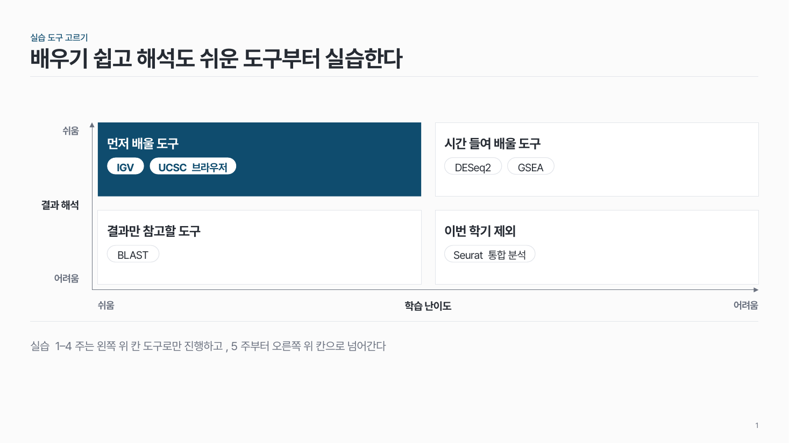
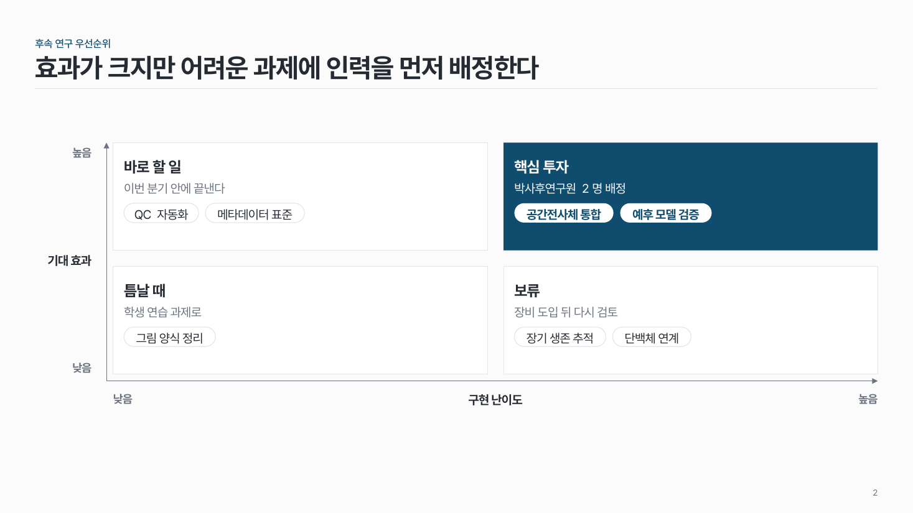
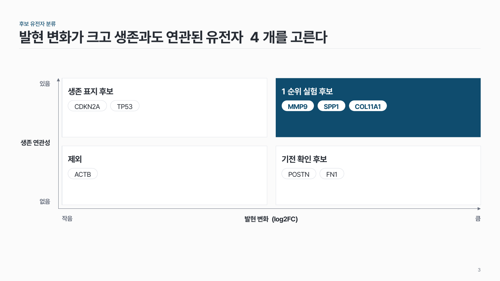

2x2 매트릭스 struct-07
두 기준으로 나눈 네 칸에 항목을 놓아요. 축 끝 라벨을 꼭 달고, 핵심 칸 하나만 진하게.

이 시안
칸마다 항목 알약 · 왼쪽 위 칸 강조 · 결론 줄
슬라이드 제목: 배우기 쉽고 해석도 쉬운 도구부터 실습한다
언제 쓰나
항목을 두 기준으로 나눠 위치를 비교할 때요. 실습 도구 고르기(학습 난이도 × 해석 용이성), 후속 연구 우선순위(효과 × 난이도), 후보 유전자 분류에 맞아요.
구성
- 가로축 · 세로축 이름과 양 끝 라벨 (낮음 · 높음).
- 같은 크기 네 칸, 칸마다 이름 (+ 한 줄).
- 항목은 칸 안에 알약으로 3개까지.
- 핵심 칸 하나만 진한 면.
지킬 것
- 칸 순서: 왼쪽 위, 오른쪽 위, 왼쪽 아래, 오른쪽 아래.
- 축 끝 라벨은 2단어 이내, 항목은 12자 이내.
하지 말 것
- 축 라벨 없이 칸 이름만 쓰지 않아요.
- 네 칸을 모두 다른 색으로 채우지 않아요.
- 항목을 칸 경계에 걸쳐 놓지 않아요.
시안 비교
같은 내용을 옵션만 바꿔 그렸어요. 그림을 누르면 크게 보여요.
A칸마다 항목 알약 · 왼쪽 위 칸 강조 · 결론 줄
슬라이드 제목: 배우기 쉽고 해석도 쉬운 도구부터 실습한다

B칸 이름 + 설명 한 줄 + 항목 · 오른쪽 위 칸 강조
슬라이드 제목: 효과가 크지만 어려운 과제에 인력을 먼저 배정한다

C설명 없이 항목만 · 오른쪽 아래 칸 강조 · 결론 줄 없음
슬라이드 제목: 발현 변화가 크고 생존과도 연관된 유전자 4개를 고른다